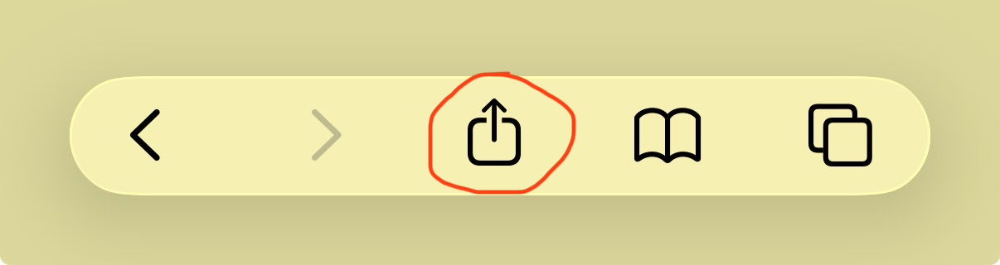
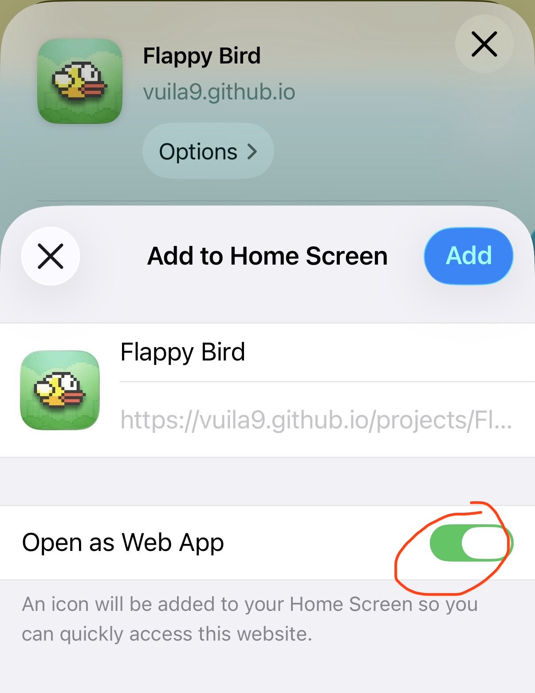

On mobile, open the app and use your browser's
“Add to Home Screen” for a native-feeling.
headphonesUse headphones! Live mic effects played through speakers will feed back into the mic and squeal.
Microphone is off.
Presets:
Description
A live karaoke microphone effects processor. Grant mic access, sing along to any song playing from another source (your phone, a speaker, YouTube, whatever), and hear your own voice pushed through reverb, echo, and EQ in real time, for the classic "karaoke mic" sound. No song hosting, no accounts, no server: everything runs in your browser using the Web Audio API.
Background
I wanted to see how far a completely static, backend-free site could go with real-time audio. The browser's Web Audio API turns out to be surprisingly capable: you can grab a live microphone stream, route it through a graph of gain/delay/filter/convolver nodes, and hear the processed result with only a few milliseconds of latency, with no server round-trip involved.
The reverb effect doesn't load an audio file; it synthesizes its own impulse response on the fly (exponentially-decaying white noise fed into a ConvolverNode), so there's no extra binary asset to host. The echo is a simple delay line with a feedback loop, and the tone controls are just a pair of shelving BiquadFilterNodes. All of it is mixed together and visualized live on a frequency canvas.
Because this page never touches a backing track, there's no licensing concern: play your song from wherever you like (phone, another tab, a Bluetooth speaker) and this tab only ever processes your voice.
Like Flappy Bird and Bejeweled X, this is also installable as a standalone app: Safari lets you add it to your iOS Home Screen, where it launches full-screen with no browser chrome. The project page and the app share the exact same interface, audio engine, and JavaScript file - the app build just swaps out the surrounding site theme for a lean, install-ready shell (manifest, service worker, standalone meta tags) so it starts instantly and works offline.
iOS App Setup Instruction
Quick disclaimer: Android users can always just use the browser tab, so yes you are being left out on this one.
Before we get started, open the webapp version on Safari browser, because apparently only Safari can do this.
The version of the app on this current page is not a webapp version, make sure you only do the next step once you open the webapp version on a new tab.

Step 1: Look anywhere on the interface for this buttonStep 2: Need to expand the option list to see this button

Step 3: Make sure this option is checked, click Add and done
Features
Live mic processing: grants microphone access and streams it through the effects chain in real time, entirely client-side.
Reverb (slider): synthesized convolution reverb, from a dry room to a big hall.
Echo (slider + delay time): classic karaoke-mic slap-back echo with adjustable delay and amount.
Bass / Treble (sliders): shelving EQ to shape the tone of your voice.
Output volume (slider): overall gain going to your speakers/headphones.
Presets (buttons): one-click combos (Dry, Concert Hall, Stadium Echo, Bathroom) that set all sliders at once.
Live visualizer: a real-time frequency display of the processed signal.
Feedback-safety warning: a dismissible banner reminding you to use headphones so the output doesn't loop back into the mic.
Installable app: add it to your iOS Home Screen from Safari for a fullscreen, native-feeling app that also works offline once loaded.
Future Improvements
Recording: capture the processed voice with MediaRecorder and offer a download.
Pitch shift: a real-time pitch-correction/harmony effect via an AudioWorklet.
Pitch scoring: analyze how close the singer's pitch is to a reference melody.
More presets, and saving custom presets to localStorage.
Input device picker for machines with multiple microphones.